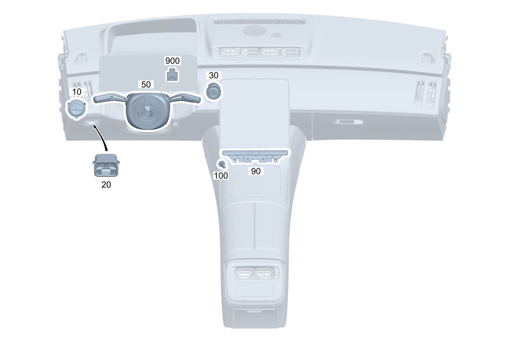

| № | Артикул | Название | Кол. | Примечание | Ограничение |
|---|---|---|---|---|---|
| 10 | A 223 905 43 03 | Переключатель света | 1 | Поворотный выключатель света / модуль освещения | |
| 10 | A 223 905 20 03 | Переключатель света (LIGHT SWITCH) | 1 | Поворотный выключатель света / модуль освещения | P14/P22/P29/P86/PTF |
| 10 | A 223 905 20 03 | Переключатель света (LIGHT SWITCH) | 1 | Поворотный выключатель света / модуль освещения | P14/P22/950/P29/P86/PTF |
| 20 | A 223 905 76 06 | Блок выключателей | 1 | Электрический стояночный тормоз | |
| 20 | A 223 905 77 06 | Блок выключателей (SWITCH BLOCK) | 1 | Электрический стояночный тормоз | P14/P22/P29/P86/PTF |
| 20 | A 223 905 77 06 | Блок выключателей (SWITCH BLOCK) | 1 | Электрический стояночный тормоз | P14/P22/950/P29/P86/PTF |
| 30 | A 223 905 80 06 | Кнопочный выключатель (BUTTON SWITCH) | 1 | Пуск / остановка двигателя | |
| 30 | A 223 905 13 00 | Кнопочный выключатель (BUTTON SWITCH) | 1 | Пуск / остановка двигателя | P14/P22/P29/P86/PTF |
| 30 | A 223 905 78 06 | Кнопочный выключатель (BUTTON SWITCH) | 1 | Пуск / остановка двигателя | P14/P22/P29/P86/PTF |
| 30 | A 223 905 78 06 | Кнопочный выключатель (BUTTON SWITCH) | 1 | Пуск / остановка двигателя | P14/P22/950/P29/P86/PTF |
| 30 | A 223 905 78 06 | Кнопочный выключатель (BUTTON SWITCH) | 1 | Пуск / остановка двигателя | (P14/950/P29/P86/PTF)+0B4 |
| 50 | A 206 900 16 11 | Блок управления | 1 | Блок подрулевых переключателей; VALEO [672] ДЕТАЛЬ ПОСЛЕ УСТАН.ПРОВЕРИТЬ НА АКТУАЛЬНОСТЬ "ПРОШИВНОГО" ПО [-] Перед заказом определите производителя. Разрешается устанавливать детали только того же производителя. | |
| 50 | A 206 900 08 12 | Блок управления | 1 | Блок подрулевых переключателей; VALEO [672] ДЕТАЛЬ ПОСЛЕ УСТАН.ПРОВЕРИТЬ НА АКТУАЛЬНОСТЬ "ПРОШИВНОГО" ПО [-] Перед заказом определите производителя. Разрешается устанавливать детали только того же производителя. | |
| 50 | A 206 900 08 12 | Блок управления | 1 | Блок подрулевых переключателей; VALEO [672] ДЕТАЛЬ ПОСЛЕ УСТАН.ПРОВЕРИТЬ НА АКТУАЛЬНОСТЬ "ПРОШИВНОГО" ПО [-] Перед заказом определите производителя. Разрешается устанавливать детали только того же производителя. | |
| 50 | A 206 900 15 16 | Блок управления | 1 | Блок подрулевых переключателей; VALEO [672] ДЕТАЛЬ ПОСЛЕ УСТАН.ПРОВЕРИТЬ НА АКТУАЛЬНОСТЬ "ПРОШИВНОГО" ПО [-] Перед заказом определите производителя. Разрешается устанавливать детали только того же производителя. | |
| 50 | A 206 900 09 15 | Блок управления | 1 | Блок подрулевых переключателей; VALEO [672] ДЕТАЛЬ ПОСЛЕ УСТАН.ПРОВЕРИТЬ НА АКТУАЛЬНОСТЬ "ПРОШИВНОГО" ПО [-] Перед заказом определите производителя. Разрешается устанавливать детали только того же производителя. | |
| 50 | A 206 900 75 04 | Блок управления | 1 | Блок подрулевых переключателей; BCS [672] ДЕТАЛЬ ПОСЛЕ УСТАН.ПРОВЕРИТЬ НА АКТУАЛЬНОСТЬ "ПРОШИВНОГО" ПО [-] Перед заказом определите производителя. Разрешается устанавливать детали только того же производителя. | |
| 50 | A 206 900 19 15 | Блок управления | 1 | Блок подрулевых переключателей; BCS [672] ДЕТАЛЬ ПОСЛЕ УСТАН.ПРОВЕРИТЬ НА АКТУАЛЬНОСТЬ "ПРОШИВНОГО" ПО [-] Перед заказом определите производителя. Разрешается устанавливать детали только того же производителя. | |
| 50 | A 206 900 18 11 | Блок управления | 1 | Блок подрулевых переключателей; VALEO [672] ДЕТАЛЬ ПОСЛЕ УСТАН.ПРОВЕРИТЬ НА АКТУАЛЬНОСТЬ "ПРОШИВНОГО" ПО [-] Перед заказом определите производителя. Разрешается устанавливать детали только того же производителя. | 443 |
| 50 | A 206 900 10 12 | Блок управления | 1 | Блок подрулевых переключателей; VALEO [672] ДЕТАЛЬ ПОСЛЕ УСТАН.ПРОВЕРИТЬ НА АКТУАЛЬНОСТЬ "ПРОШИВНОГО" ПО [-] Перед заказом определите производителя. Разрешается устанавливать детали только того же производителя. | 443 |
| 50 | A 206 900 10 12 | Блок управления | 1 | Блок подрулевых переключателей; VALEO [672] ДЕТАЛЬ ПОСЛЕ УСТАН.ПРОВЕРИТЬ НА АКТУАЛЬНОСТЬ "ПРОШИВНОГО" ПО [-] Перед заказом определите производителя. Разрешается устанавливать детали только того же производителя. | 443 |
| 50 | A 206 900 17 16 | Блок управления | 1 | Блок подрулевых переключателей; VALEO [672] ДЕТАЛЬ ПОСЛЕ УСТАН.ПРОВЕРИТЬ НА АКТУАЛЬНОСТЬ "ПРОШИВНОГО" ПО [-] Перед заказом определите производителя. Разрешается устанавливать детали только того же производителя. | 443 |
| 50 | A 206 900 11 15 | Блок управления | 1 | Блок подрулевых переключателей; VALEO [672] ДЕТАЛЬ ПОСЛЕ УСТАН.ПРОВЕРИТЬ НА АКТУАЛЬНОСТЬ "ПРОШИВНОГО" ПО [-] Перед заказом определите производителя. Разрешается устанавливать детали только того же производителя. | 443 |
| 50 | A 206 900 88 06 | Блок управления | 1 | Блок подрулевых переключателей; BCS [672] ДЕТАЛЬ ПОСЛЕ УСТАН.ПРОВЕРИТЬ НА АКТУАЛЬНОСТЬ "ПРОШИВНОГО" ПО [-] Перед заказом определите производителя. Разрешается устанавливать детали только того же производителя. | 443 |
| 50 | A 206 900 26 15 | Блок управления | 1 | Блок подрулевых переключателей; BCS [672] ДЕТАЛЬ ПОСЛЕ УСТАН.ПРОВЕРИТЬ НА АКТУАЛЬНОСТЬ "ПРОШИВНОГО" ПО [402] БОЛЬШЕ НЕ ПОСТАВЛЯЕТСЯ [-] Перед заказом определите производителя. Разрешается устанавливать детали только того же производителя. | 443 |
| 50 | A 206 900 20 11 | Блок управления | 1 | Блок подрулевых переключателей; VALEO [672] ДЕТАЛЬ ПОСЛЕ УСТАН.ПРОВЕРИТЬ НА АКТУАЛЬНОСТЬ "ПРОШИВНОГО" ПО [-] Перед заказом определите производителя. Разрешается устанавливать детали только того же производителя. | 275 |
| 50 | A 206 900 12 12 | Блок управления | 1 | Блок подрулевых переключателей; VALEO [672] ДЕТАЛЬ ПОСЛЕ УСТАН.ПРОВЕРИТЬ НА АКТУАЛЬНОСТЬ "ПРОШИВНОГО" ПО [-] Перед заказом определите производителя. Разрешается устанавливать детали только того же производителя. | 275 |
| 50 | A 206 900 12 12 | Блок управления | 1 | Блок подрулевых переключателей; VALEO [672] ДЕТАЛЬ ПОСЛЕ УСТАН.ПРОВЕРИТЬ НА АКТУАЛЬНОСТЬ "ПРОШИВНОГО" ПО [-] Перед заказом определите производителя. Разрешается устанавливать детали только того же производителя. | 275 |
| 50 | A 206 900 19 16 | Блок управления | 1 | Блок подрулевых переключателей; VALEO [672] ДЕТАЛЬ ПОСЛЕ УСТАН.ПРОВЕРИТЬ НА АКТУАЛЬНОСТЬ "ПРОШИВНОГО" ПО [-] Перед заказом определите производителя. Разрешается устанавливать детали только того же производителя. | 275 |
| 50 | A 206 900 14 15 | Блок управления | 1 | Блок подрулевых переключателей; VALEO [672] ДЕТАЛЬ ПОСЛЕ УСТАН.ПРОВЕРИТЬ НА АКТУАЛЬНОСТЬ "ПРОШИВНОГО" ПО [-] Перед заказом определите производителя. Разрешается устанавливать детали только того же производителя. | 275 |
| 50 | A 206 900 10 10 | Блок управления (CONTROL UNIT) | 1 | Блок подрулевых переключателей; VALEO [672] ДЕТАЛЬ ПОСЛЕ УСТАН.ПРОВЕРИТЬ НА АКТУАЛЬНОСТЬ "ПРОШИВНОГО" ПО [-] Перед заказом определите производителя. Разрешается устанавливать детали только того же производителя. | 275+443 |
| 50 | A 206 900 22 11 | Блок управления | 1 | Блок подрулевых переключателей; VALEO [672] ДЕТАЛЬ ПОСЛЕ УСТАН.ПРОВЕРИТЬ НА АКТУАЛЬНОСТЬ "ПРОШИВНОГО" ПО [-] Перед заказом определите производителя. Разрешается устанавливать детали только того же производителя. | 275+443 |
| 50 | A 206 900 14 12 | Блок управления | 1 | Блок подрулевых переключателей; VALEO [672] ДЕТАЛЬ ПОСЛЕ УСТАН.ПРОВЕРИТЬ НА АКТУАЛЬНОСТЬ "ПРОШИВНОГО" ПО [-] Перед заказом определите производителя. Разрешается устанавливать детали только того же производителя. | 275+443 |
| 50 | A 206 900 14 12 | Блок управления | 1 | Блок подрулевых переключателей; VALEO [672] ДЕТАЛЬ ПОСЛЕ УСТАН.ПРОВЕРИТЬ НА АКТУАЛЬНОСТЬ "ПРОШИВНОГО" ПО [-] Перед заказом определите производителя. Разрешается устанавливать детали только того же производителя. | 275+443 |
| 50 | A 206 900 21 16 | Блок управления | 1 | Блок подрулевых переключателей; VALEO [672] ДЕТАЛЬ ПОСЛЕ УСТАН.ПРОВЕРИТЬ НА АКТУАЛЬНОСТЬ "ПРОШИВНОГО" ПО [-] Перед заказом определите производителя. Разрешается устанавливать детали только того же производителя. | 275+443 |
| 50 | A 206 900 17 15 | Блок управления | 1 | Блок подрулевых переключателей; VALEO [672] ДЕТАЛЬ ПОСЛЕ УСТАН.ПРОВЕРИТЬ НА АКТУАЛЬНОСТЬ "ПРОШИВНОГО" ПО [-] Перед заказом определите производителя. Разрешается устанавливать детали только того же производителя. | 275+443 |
| 50 | A 206 900 79 04 | Блок управления | 1 | Блок подрулевых переключателей; BCS [672] ДЕТАЛЬ ПОСЛЕ УСТАН.ПРОВЕРИТЬ НА АКТУАЛЬНОСТЬ "ПРОШИВНОГО" ПО [-] Перед заказом определите производителя. Разрешается устанавливать детали только того же производителя. | 275+443 |
| 50 | A 206 900 24 15 | Блок управления | 1 | Блок подрулевых переключателей; BCS [672] ДЕТАЛЬ ПОСЛЕ УСТАН.ПРОВЕРИТЬ НА АКТУАЛЬНОСТЬ "ПРОШИВНОГО" ПО [-] Перед заказом определите производителя. Разрешается устанавливать детали только того же производителя. | 275+443 |
| 50 | A 297 900 67 10 | Блок управления | 1 | Блок подрулевых переключателей; VALEO [672] ДЕТАЛЬ ПОСЛЕ УСТАН.ПРОВЕРИТЬ НА АКТУАЛЬНОСТЬ "ПРОШИВНОГО" ПО [-] Перед заказом определите производителя. Разрешается устанавливать детали только того же производителя. | 275+(494/460) |
| 50 | A 297 900 12 09 | Блок управления | 1 | Блок подрулевых переключателей; VALEO [672] ДЕТАЛЬ ПОСЛЕ УСТАН.ПРОВЕРИТЬ НА АКТУАЛЬНОСТЬ "ПРОШИВНОГО" ПО [-] Перед заказом определите производителя. Разрешается устанавливать детали только того же производителя. | 275+(494/460) |
| 50 | A 297 900 69 10 | Блок управления | 1 | Блок подрулевых переключателей; VALEO [672] ДЕТАЛЬ ПОСЛЕ УСТАН.ПРОВЕРИТЬ НА АКТУАЛЬНОСТЬ "ПРОШИВНОГО" ПО [-] Перед заказом определите производителя. Разрешается устанавливать детали только того же производителя. | 275+443+(494/460) |
| 50 | A 297 900 14 09 | Блок управления | 1 | Блок подрулевых переключателей; VALEO [672] ДЕТАЛЬ ПОСЛЕ УСТАН.ПРОВЕРИТЬ НА АКТУАЛЬНОСТЬ "ПРОШИВНОГО" ПО [-] Перед заказом определите производителя. Разрешается устанавливать детали только того же производителя. | 275+443+(494/460) |
| 50 | A 297 900 75 08 | Блок управления | 1 | Блок подрулевых переключателей; VALEO [672] ДЕТАЛЬ ПОСЛЕ УСТАН.ПРОВЕРИТЬ НА АКТУАЛЬНОСТЬ "ПРОШИВНОГО" ПО [-] Перед заказом определите производителя. Разрешается устанавливать детали только того же производителя. | 803 |
| 50 | A 297 900 24 12 | Блок управления | 1 | Блок подрулевых переключателей; VALEO [672] ДЕТАЛЬ ПОСЛЕ УСТАН.ПРОВЕРИТЬ НА АКТУАЛЬНОСТЬ "ПРОШИВНОГО" ПО [-] Перед заказом определите производителя. Разрешается устанавливать детали только того же производителя. | 803 |
| 50 | A 297 900 76 14 | Блок управления | 1 | Блок подрулевых переключателей; VALEO [672] ДЕТАЛЬ ПОСЛЕ УСТАН.ПРОВЕРИТЬ НА АКТУАЛЬНОСТЬ "ПРОШИВНОГО" ПО [-] Перед заказом определите производителя. Разрешается устанавливать детали только того же производителя. | 803 |
| 50 | A 297 900 76 14 | Блок управления | 1 | Блок подрулевых переключателей; VALEO [672] ДЕТАЛЬ ПОСЛЕ УСТАН.ПРОВЕРИТЬ НА АКТУАЛЬНОСТЬ "ПРОШИВНОГО" ПО [-] Перед заказом определите производителя. Разрешается устанавливать детали только того же производителя. | |
| 50 | A 206 900 75 14 | Блок управления | 1 | Блок подрулевых переключателей; BCS [672] ДЕТАЛЬ ПОСЛЕ УСТАН.ПРОВЕРИТЬ НА АКТУАЛЬНОСТЬ "ПРОШИВНОГО" ПО [-] Перед заказом определите производителя. Разрешается устанавливать детали только того же производителя. | 803 |
| 50 | A 295 900 43 00 | Блок управления | 1 | Блок подрулевых переключателей; BCS [672] ДЕТАЛЬ ПОСЛЕ УСТАН.ПРОВЕРИТЬ НА АКТУАЛЬНОСТЬ "ПРОШИВНОГО" ПО [-] Перед заказом определите производителя. Разрешается устанавливать детали только того же производителя. | 803 |
| 50 | A 295 900 79 00 | Блок управления | 1 | Блок подрулевых переключателей; BCS [672] ДЕТАЛЬ ПОСЛЕ УСТАН.ПРОВЕРИТЬ НА АКТУАЛЬНОСТЬ "ПРОШИВНОГО" ПО [-] Перед заказом определите производителя. Разрешается устанавливать детали только того же производителя. | 803 |
| 50 | A 295 900 02 01 | Блок управления | 1 | Блок подрулевых переключателей; BCS [672] ДЕТАЛЬ ПОСЛЕ УСТАН.ПРОВЕРИТЬ НА АКТУАЛЬНОСТЬ "ПРОШИВНОГО" ПО [-] Перед заказом определите производителя. Разрешается устанавливать детали только того же производителя. | 803 |
| 50 | A 295 900 02 01 | Блок управления | 1 | Блок подрулевых переключателей; BCS [672] ДЕТАЛЬ ПОСЛЕ УСТАН.ПРОВЕРИТЬ НА АКТУАЛЬНОСТЬ "ПРОШИВНОГО" ПО [-] Перед заказом определите производителя. Разрешается устанавливать детали только того же производителя. | |
| 50 | A 297 900 77 08 | Блок управления | 1 | Блок подрулевых переключателей; VALEO [672] ДЕТАЛЬ ПОСЛЕ УСТАН.ПРОВЕРИТЬ НА АКТУАЛЬНОСТЬ "ПРОШИВНОГО" ПО [-] Перед заказом определите производителя. Разрешается устанавливать детали только того же производителя. | 803+443 |
| 50 | A 297 900 26 12 | Блок управления | 1 | Блок подрулевых переключателей; VALEO [672] ДЕТАЛЬ ПОСЛЕ УСТАН.ПРОВЕРИТЬ НА АКТУАЛЬНОСТЬ "ПРОШИВНОГО" ПО [-] Перед заказом определите производителя. Разрешается устанавливать детали только того же производителя. | 803+443 |
| 50 | A 297 900 78 14 | Блок управления (CONTROL UNIT) | 1 | Блок подрулевых переключателей; VALEO [672] ДЕТАЛЬ ПОСЛЕ УСТАН.ПРОВЕРИТЬ НА АКТУАЛЬНОСТЬ "ПРОШИВНОГО" ПО [-] Перед заказом определите производителя. Разрешается устанавливать детали только того же производителя. | 803+443 |
| 50 | A 297 900 78 14 | Блок управления (CONTROL UNIT) | 1 | Блок подрулевых переключателей; VALEO [672] ДЕТАЛЬ ПОСЛЕ УСТАН.ПРОВЕРИТЬ НА АКТУАЛЬНОСТЬ "ПРОШИВНОГО" ПО [-] Перед заказом определите производителя. Разрешается устанавливать детали только того же производителя. | 443 |
| 50 | A 206 900 27 15 | Блок управления | 1 | Блок подрулевых переключателей; BCS [672] ДЕТАЛЬ ПОСЛЕ УСТАН.ПРОВЕРИТЬ НА АКТУАЛЬНОСТЬ "ПРОШИВНОГО" ПО [-] Перед заказом определите производителя. Разрешается устанавливать детали только того же производителя. | 803+443 |
| 50 | A 295 900 45 00 | Блок управления | 1 | Блок подрулевых переключателей; BCS [672] ДЕТАЛЬ ПОСЛЕ УСТАН.ПРОВЕРИТЬ НА АКТУАЛЬНОСТЬ "ПРОШИВНОГО" ПО [-] Перед заказом определите производителя. Разрешается устанавливать детали только того же производителя. | 803+443 |
| 50 | A 295 900 81 00 | Блок управления | 1 | Блок подрулевых переключателей; BCS [672] ДЕТАЛЬ ПОСЛЕ УСТАН.ПРОВЕРИТЬ НА АКТУАЛЬНОСТЬ "ПРОШИВНОГО" ПО [-] Перед заказом определите производителя. Разрешается устанавливать детали только того же производителя. | 803+443 |
| 50 | A 295 900 04 01 | Блок управления | 1 | Блок подрулевых переключателей; BCS [672] ДЕТАЛЬ ПОСЛЕ УСТАН.ПРОВЕРИТЬ НА АКТУАЛЬНОСТЬ "ПРОШИВНОГО" ПО [-] Перед заказом определите производителя. Разрешается устанавливать детали только того же производителя. | 803+443 |
| 50 | A 295 900 04 01 | Блок управления | 1 | Блок подрулевых переключателей; BCS [672] ДЕТАЛЬ ПОСЛЕ УСТАН.ПРОВЕРИТЬ НА АКТУАЛЬНОСТЬ "ПРОШИВНОГО" ПО [-] Перед заказом определите производителя. Разрешается устанавливать детали только того же производителя. | 443 |
| 50 | A 297 900 79 08 | Блок управления | 1 | Блок подрулевых переключателей; VALEO [672] ДЕТАЛЬ ПОСЛЕ УСТАН.ПРОВЕРИТЬ НА АКТУАЛЬНОСТЬ "ПРОШИВНОГО" ПО [-] Перед заказом определите производителя. Разрешается устанавливать детали только того же производителя. | 803+275 |
| 50 | A 297 900 28 12 | Блок управления | 1 | Блок подрулевых переключателей; VALEO [672] ДЕТАЛЬ ПОСЛЕ УСТАН.ПРОВЕРИТЬ НА АКТУАЛЬНОСТЬ "ПРОШИВНОГО" ПО [-] Перед заказом определите производителя. Разрешается устанавливать детали только того же производителя. | 803+275 |
| 50 | A 297 900 80 14 | Блок управления (CONTROL UNIT) | 1 | Блок подрулевых переключателей; VALEO [672] ДЕТАЛЬ ПОСЛЕ УСТАН.ПРОВЕРИТЬ НА АКТУАЛЬНОСТЬ "ПРОШИВНОГО" ПО [-] Перед заказом определите производителя. Разрешается устанавливать детали только того же производителя. | 803+275 |
| 50 | A 297 900 80 14 | Блок управления (CONTROL UNIT) | 1 | Блок подрулевых переключателей; VALEO [672] ДЕТАЛЬ ПОСЛЕ УСТАН.ПРОВЕРИТЬ НА АКТУАЛЬНОСТЬ "ПРОШИВНОГО" ПО [-] Перед заказом определите производителя. Разрешается устанавливать детали только того же производителя. | 275 |
| 50 | A 206 900 77 14 | Блок управления | 1 | Блок подрулевых переключателей; BCS [672] ДЕТАЛЬ ПОСЛЕ УСТАН.ПРОВЕРИТЬ НА АКТУАЛЬНОСТЬ "ПРОШИВНОГО" ПО [-] Перед заказом определите производителя. Разрешается устанавливать детали только того же производителя. | 803+275 |
| 50 | A 295 900 46 00 | Блок управления | 1 | Блок подрулевых переключателей; BCS [672] ДЕТАЛЬ ПОСЛЕ УСТАН.ПРОВЕРИТЬ НА АКТУАЛЬНОСТЬ "ПРОШИВНОГО" ПО [-] Перед заказом определите производителя. Разрешается устанавливать детали только того же производителя. | 803+275 |
| 50 | A 295 900 83 00 | Блок управления | 1 | Блок подрулевых переключателей; BCS [672] ДЕТАЛЬ ПОСЛЕ УСТАН.ПРОВЕРИТЬ НА АКТУАЛЬНОСТЬ "ПРОШИВНОГО" ПО [-] Перед заказом определите производителя. Разрешается устанавливать детали только того же производителя. | 803+275 |
| 50 | A 295 900 06 01 | Блок управления | 1 | Блок подрулевых переключателей; BCS [672] ДЕТАЛЬ ПОСЛЕ УСТАН.ПРОВЕРИТЬ НА АКТУАЛЬНОСТЬ "ПРОШИВНОГО" ПО [-] Перед заказом определите производителя. Разрешается устанавливать детали только того же производителя. | 803+275 |
| 50 | A 295 900 06 01 | Блок управления | 1 | Блок подрулевых переключателей; BCS [672] ДЕТАЛЬ ПОСЛЕ УСТАН.ПРОВЕРИТЬ НА АКТУАЛЬНОСТЬ "ПРОШИВНОГО" ПО [-] Перед заказом определите производителя. Разрешается устанавливать детали только того же производителя. | 275 |
| 50 | A 297 900 81 08 | Блок управления | 1 | Блок подрулевых переключателей; VALEO [672] ДЕТАЛЬ ПОСЛЕ УСТАН.ПРОВЕРИТЬ НА АКТУАЛЬНОСТЬ "ПРОШИВНОГО" ПО [-] Перед заказом определите производителя. Разрешается устанавливать детали только того же производителя. | 803+275+443 |
| 50 | A 297 900 30 12 | Блок управления (CONTROL UNIT) | 1 | Блок подрулевых переключателей; VALEO [672] ДЕТАЛЬ ПОСЛЕ УСТАН.ПРОВЕРИТЬ НА АКТУАЛЬНОСТЬ "ПРОШИВНОГО" ПО [-] Перед заказом определите производителя. Разрешается устанавливать детали только того же производителя. | 803+275+443 |
| 50 | A 297 900 82 14 | Блок управления (CONTROL UNIT) | 1 | Блок подрулевых переключателей; VALEO [672] ДЕТАЛЬ ПОСЛЕ УСТАН.ПРОВЕРИТЬ НА АКТУАЛЬНОСТЬ "ПРОШИВНОГО" ПО [-] Перед заказом определите производителя. Разрешается устанавливать детали только того же производителя. | 803+275+443 |
| 50 | A 297 900 82 14 | Блок управления (CONTROL UNIT) | 1 | Блок подрулевых переключателей; VALEO [672] ДЕТАЛЬ ПОСЛЕ УСТАН.ПРОВЕРИТЬ НА АКТУАЛЬНОСТЬ "ПРОШИВНОГО" ПО [-] Перед заказом определите производителя. Разрешается устанавливать детали только того же производителя. | 275+443 |
| 50 | A 206 900 79 14 | Блок управления | 1 | Блок подрулевых переключателей; BCS [672] ДЕТАЛЬ ПОСЛЕ УСТАН.ПРОВЕРИТЬ НА АКТУАЛЬНОСТЬ "ПРОШИВНОГО" ПО [-] Перед заказом определите производителя. Разрешается устанавливать детали только того же производителя. | 803+275+443 |
| 50 | A 295 900 49 00 | Блок управления | 1 | Блок подрулевых переключателей; BCS [672] ДЕТАЛЬ ПОСЛЕ УСТАН.ПРОВЕРИТЬ НА АКТУАЛЬНОСТЬ "ПРОШИВНОГО" ПО [-] Перед заказом определите производителя. Разрешается устанавливать детали только того же производителя. | 803+275+443 |
| 50 | A 295 900 85 00 | Блок управления | 1 | Блок подрулевых переключателей; BCS [672] ДЕТАЛЬ ПОСЛЕ УСТАН.ПРОВЕРИТЬ НА АКТУАЛЬНОСТЬ "ПРОШИВНОГО" ПО [-] Перед заказом определите производителя. Разрешается устанавливать детали только того же производителя. | 803+275+443 |
| 50 | A 295 900 08 01 | Блок управления | 1 | Блок подрулевых переключателей; BCS [672] ДЕТАЛЬ ПОСЛЕ УСТАН.ПРОВЕРИТЬ НА АКТУАЛЬНОСТЬ "ПРОШИВНОГО" ПО [-] Перед заказом определите производителя. Разрешается устанавливать детали только того же производителя. | 803+275+443 |
| 50 | A 295 900 08 01 | Блок управления | 1 | Блок подрулевых переключателей; BCS [672] ДЕТАЛЬ ПОСЛЕ УСТАН.ПРОВЕРИТЬ НА АКТУАЛЬНОСТЬ "ПРОШИВНОГО" ПО [-] Перед заказом определите производителя. Разрешается устанавливать детали только того же производителя. | 275+443 |
| 50 | A 297 900 56 16 | Блок управления | 1 | Блок подрулевых переключателей; VALEO [672] ДЕТАЛЬ ПОСЛЕ УСТАН.ПРОВЕРИТЬ НА АКТУАЛЬНОСТЬ "ПРОШИВНОГО" ПО [-] Перед заказом определите производителя. Разрешается устанавливать детали только того же производителя. | 803+053 |
| 50 | A 297 900 56 16 | Блок управления | 1 | Блок подрулевых переключателей; VALEO [672] ДЕТАЛЬ ПОСЛЕ УСТАН.ПРОВЕРИТЬ НА АКТУАЛЬНОСТЬ "ПРОШИВНОГО" ПО [-] Перед заказом определите производителя. Разрешается устанавливать детали только того же производителя. | |
| 50 | A 295 900 02 01 | Блок управления | 1 | Блок подрулевых переключателей; BCS [672] ДЕТАЛЬ ПОСЛЕ УСТАН.ПРОВЕРИТЬ НА АКТУАЛЬНОСТЬ "ПРОШИВНОГО" ПО [-] Перед заказом определите производителя. Разрешается устанавливать детали только того же производителя. | 803+053 |
| 50 | A 295 900 02 01 | Блок управления | 1 | Блок подрулевых переключателей; BCS [672] ДЕТАЛЬ ПОСЛЕ УСТАН.ПРОВЕРИТЬ НА АКТУАЛЬНОСТЬ "ПРОШИВНОГО" ПО [-] Перед заказом определите производителя. Разрешается устанавливать детали только того же производителя. | |
| 50 | A 297 900 57 16 | Блок управления (CONTROL UNIT) | 1 | Блок подрулевых переключателей; VALEO [672] ДЕТАЛЬ ПОСЛЕ УСТАН.ПРОВЕРИТЬ НА АКТУАЛЬНОСТЬ "ПРОШИВНОГО" ПО [-] Перед заказом определите производителя. Разрешается устанавливать детали только того же производителя. | 803+053+443 |
| 50 | A 297 900 57 16 | Блок управления (CONTROL UNIT) | 1 | Блок подрулевых переключателей; VALEO [672] ДЕТАЛЬ ПОСЛЕ УСТАН.ПРОВЕРИТЬ НА АКТУАЛЬНОСТЬ "ПРОШИВНОГО" ПО [-] Перед заказом определите производителя. Разрешается устанавливать детали только того же производителя. | 443 |
| 50 | A 295 900 04 01 | Блок управления | 1 | Блок подрулевых переключателей; BCS [672] ДЕТАЛЬ ПОСЛЕ УСТАН.ПРОВЕРИТЬ НА АКТУАЛЬНОСТЬ "ПРОШИВНОГО" ПО [-] Перед заказом определите производителя. Разрешается устанавливать детали только того же производителя. | 803+053+443 |
| 50 | A 295 900 04 01 | Блок управления | 1 | Блок подрулевых переключателей; BCS [672] ДЕТАЛЬ ПОСЛЕ УСТАН.ПРОВЕРИТЬ НА АКТУАЛЬНОСТЬ "ПРОШИВНОГО" ПО [-] Перед заказом определите производителя. Разрешается устанавливать детали только того же производителя. | 443 |
| 50 | A 297 900 60 16 | Блок управления | 1 | Блок подрулевых переключателей; VALEO [672] ДЕТАЛЬ ПОСЛЕ УСТАН.ПРОВЕРИТЬ НА АКТУАЛЬНОСТЬ "ПРОШИВНОГО" ПО [-] Перед заказом определите производителя. Разрешается устанавливать детали только того же производителя. | 803+053+275 |
| 50 | A 297 900 60 16 | Блок управления | 1 | Блок подрулевых переключателей; VALEO [672] ДЕТАЛЬ ПОСЛЕ УСТАН.ПРОВЕРИТЬ НА АКТУАЛЬНОСТЬ "ПРОШИВНОГО" ПО [-] Перед заказом определите производителя. Разрешается устанавливать детали только того же производителя. | 275 |
| 50 | A 295 900 06 01 | Блок управления | 1 | Блок подрулевых переключателей; BCS [672] ДЕТАЛЬ ПОСЛЕ УСТАН.ПРОВЕРИТЬ НА АКТУАЛЬНОСТЬ "ПРОШИВНОГО" ПО [-] Перед заказом определите производителя. Разрешается устанавливать детали только того же производителя. | 803+053+275 |
| 50 | A 295 900 06 01 | Блок управления | 1 | Блок подрулевых переключателей; BCS [672] ДЕТАЛЬ ПОСЛЕ УСТАН.ПРОВЕРИТЬ НА АКТУАЛЬНОСТЬ "ПРОШИВНОГО" ПО [-] Перед заказом определите производителя. Разрешается устанавливать детали только того же производителя. | 275 |
| 50 | A 297 900 62 16 | Блок управления (CONTROL UNIT) | 1 | Блок подрулевых переключателей; VALEO [672] ДЕТАЛЬ ПОСЛЕ УСТАН.ПРОВЕРИТЬ НА АКТУАЛЬНОСТЬ "ПРОШИВНОГО" ПО [-] Перед заказом определите производителя. Разрешается устанавливать детали только того же производителя. | 803+053+275+443 |
| 50 | A 297 900 62 16 | Блок управления (CONTROL UNIT) | 1 | Блок подрулевых переключателей; VALEO [672] ДЕТАЛЬ ПОСЛЕ УСТАН.ПРОВЕРИТЬ НА АКТУАЛЬНОСТЬ "ПРОШИВНОГО" ПО [-] Перед заказом определите производителя. Разрешается устанавливать детали только того же производителя. | 275+443 |
| 50 | A 295 900 08 01 | Блок управления | 1 | Блок подрулевых переключателей; BCS [672] ДЕТАЛЬ ПОСЛЕ УСТАН.ПРОВЕРИТЬ НА АКТУАЛЬНОСТЬ "ПРОШИВНОГО" ПО [-] Перед заказом определите производителя. Разрешается устанавливать детали только того же производителя. | 803+053+275+443 |
| 50 | A 295 900 08 01 | Блок управления | 1 | Блок подрулевых переключателей; BCS [672] ДЕТАЛЬ ПОСЛЕ УСТАН.ПРОВЕРИТЬ НА АКТУАЛЬНОСТЬ "ПРОШИВНОГО" ПО [-] Перед заказом определите производителя. Разрешается устанавливать детали только того же производителя. | 275+443 |
| 50 | A 297 900 75 17 | Блок управления | 1 | Блок подрулевых переключателей; VALEO [672] ДЕТАЛЬ ПОСЛЕ УСТАН.ПРОВЕРИТЬ НА АКТУАЛЬНОСТЬ "ПРОШИВНОГО" ПО [-] Перед заказом определите производителя. Разрешается устанавливать детали только того же производителя. | 804 |
| 50 | A 297 900 75 17 | Блок управления | 1 | Блок подрулевых переключателей; VALEO [672] ДЕТАЛЬ ПОСЛЕ УСТАН.ПРОВЕРИТЬ НА АКТУАЛЬНОСТЬ "ПРОШИВНОГО" ПО [-] Перед заказом определите производителя. Разрешается устанавливать детали только того же производителя. | 804/804+054 |
| 50 | A 297 900 75 17 | Блок управления | 1 | Блок подрулевых переключателей; VALEO [672] ДЕТАЛЬ ПОСЛЕ УСТАН.ПРОВЕРИТЬ НА АКТУАЛЬНОСТЬ "ПРОШИВНОГО" ПО [-] Перед заказом определите производителя. Разрешается устанавливать детали только того же производителя. | |
| 50 | A 295 900 21 01 | Блок управления | 1 | Блок подрулевых переключателей; BCS [672] ДЕТАЛЬ ПОСЛЕ УСТАН.ПРОВЕРИТЬ НА АКТУАЛЬНОСТЬ "ПРОШИВНОГО" ПО [-] Перед заказом определите производителя. Разрешается устанавливать детали только того же производителя. | 804 |
| 50 | A 295 900 21 01 | Блок управления | 1 | Блок подрулевых переключателей; BCS [672] ДЕТАЛЬ ПОСЛЕ УСТАН.ПРОВЕРИТЬ НА АКТУАЛЬНОСТЬ "ПРОШИВНОГО" ПО [-] Перед заказом определите производителя. Разрешается устанавливать детали только того же производителя. | 804/804+054 |
| 50 | A 295 900 21 01 | Блок управления | 1 | Блок подрулевых переключателей; BCS [672] ДЕТАЛЬ ПОСЛЕ УСТАН.ПРОВЕРИТЬ НА АКТУАЛЬНОСТЬ "ПРОШИВНОГО" ПО [-] Перед заказом определите производителя. Разрешается устанавливать детали только того же производителя. | |
| 50 | A 297 900 77 17 | Блок управления | 1 | Блок подрулевых переключателей; VALEO [672] ДЕТАЛЬ ПОСЛЕ УСТАН.ПРОВЕРИТЬ НА АКТУАЛЬНОСТЬ "ПРОШИВНОГО" ПО [-] Перед заказом определите производителя. Разрешается устанавливать детали только того же производителя. | 804+443 |
| 50 | A 297 900 77 17 | Блок управления | 1 | Блок подрулевых переключателей; VALEO [672] ДЕТАЛЬ ПОСЛЕ УСТАН.ПРОВЕРИТЬ НА АКТУАЛЬНОСТЬ "ПРОШИВНОГО" ПО [-] Перед заказом определите производителя. Разрешается устанавливать детали только того же производителя. | (804/804+054)+443 |
| 50 | A 297 900 77 17 | Блок управления | 1 | Блок подрулевых переключателей; VALEO [672] ДЕТАЛЬ ПОСЛЕ УСТАН.ПРОВЕРИТЬ НА АКТУАЛЬНОСТЬ "ПРОШИВНОГО" ПО [-] Перед заказом определите производителя. Разрешается устанавливать детали только того же производителя. | 443 |
| 50 | A 295 900 23 01 | Блок управления | 1 | Блок подрулевых переключателей; BCS [672] ДЕТАЛЬ ПОСЛЕ УСТАН.ПРОВЕРИТЬ НА АКТУАЛЬНОСТЬ "ПРОШИВНОГО" ПО [-] Перед заказом определите производителя. Разрешается устанавливать детали только того же производителя. | 804+443 |
| 50 | A 295 900 23 01 | Блок управления | 1 | Блок подрулевых переключателей; BCS [672] ДЕТАЛЬ ПОСЛЕ УСТАН.ПРОВЕРИТЬ НА АКТУАЛЬНОСТЬ "ПРОШИВНОГО" ПО [-] Перед заказом определите производителя. Разрешается устанавливать детали только того же производителя. | (804/804+054)+443 |
| 50 | A 295 900 23 01 | Блок управления | 1 | Блок подрулевых переключателей; BCS [672] ДЕТАЛЬ ПОСЛЕ УСТАН.ПРОВЕРИТЬ НА АКТУАЛЬНОСТЬ "ПРОШИВНОГО" ПО [-] Перед заказом определите производителя. Разрешается устанавливать детали только того же производителя. | 443 |
| 50 | A 297 900 79 17 | Блок управления | 1 | Блок подрулевых переключателей; VALEO [672] ДЕТАЛЬ ПОСЛЕ УСТАН.ПРОВЕРИТЬ НА АКТУАЛЬНОСТЬ "ПРОШИВНОГО" ПО [-] Перед заказом определите производителя. Разрешается устанавливать детали только того же производителя. | 804+275 |
| 50 | A 297 900 79 17 | Блок управления | 1 | Блок подрулевых переключателей; VALEO [672] ДЕТАЛЬ ПОСЛЕ УСТАН.ПРОВЕРИТЬ НА АКТУАЛЬНОСТЬ "ПРОШИВНОГО" ПО [-] Перед заказом определите производителя. Разрешается устанавливать детали только того же производителя. | (804/804+054)+275 |
| 50 | A 297 900 79 17 | Блок управления | 1 | Блок подрулевых переключателей; VALEO [672] ДЕТАЛЬ ПОСЛЕ УСТАН.ПРОВЕРИТЬ НА АКТУАЛЬНОСТЬ "ПРОШИВНОГО" ПО [-] Перед заказом определите производителя. Разрешается устанавливать детали только того же производителя. | 275 |
| 50 | A 295 900 25 01 | Блок управления | 1 | Блок подрулевых переключателей; BCS [672] ДЕТАЛЬ ПОСЛЕ УСТАН.ПРОВЕРИТЬ НА АКТУАЛЬНОСТЬ "ПРОШИВНОГО" ПО [-] Перед заказом определите производителя. Разрешается устанавливать детали только того же производителя. | 804+275 |
| 50 | A 295 900 25 01 | Блок управления | 1 | Блок подрулевых переключателей; BCS [672] ДЕТАЛЬ ПОСЛЕ УСТАН.ПРОВЕРИТЬ НА АКТУАЛЬНОСТЬ "ПРОШИВНОГО" ПО [-] Перед заказом определите производителя. Разрешается устанавливать детали только того же производителя. | (804/804+054)+275 |
| 50 | A 295 900 25 01 | Блок управления | 1 | Блок подрулевых переключателей; BCS [672] ДЕТАЛЬ ПОСЛЕ УСТАН.ПРОВЕРИТЬ НА АКТУАЛЬНОСТЬ "ПРОШИВНОГО" ПО [-] Перед заказом определите производителя. Разрешается устанавливать детали только того же производителя. | 275 |
| 50 | A 297 900 81 17 | Блок управления | 1 | Блок подрулевых переключателей; VALEO [672] ДЕТАЛЬ ПОСЛЕ УСТАН.ПРОВЕРИТЬ НА АКТУАЛЬНОСТЬ "ПРОШИВНОГО" ПО [-] Перед заказом определите производителя. Разрешается устанавливать детали только того же производителя. | 804+275+443 |
| 50 | A 297 900 81 17 | Блок управления | 1 | Блок подрулевых переключателей; VALEO [672] ДЕТАЛЬ ПОСЛЕ УСТАН.ПРОВЕРИТЬ НА АКТУАЛЬНОСТЬ "ПРОШИВНОГО" ПО [-] Перед заказом определите производителя. Разрешается устанавливать детали только того же производителя. | (804/804+054)+275+443 |
| 50 | A 297 900 81 17 | Блок управления | 1 | Блок подрулевых переключателей; VALEO [672] ДЕТАЛЬ ПОСЛЕ УСТАН.ПРОВЕРИТЬ НА АКТУАЛЬНОСТЬ "ПРОШИВНОГО" ПО [-] Перед заказом определите производителя. Разрешается устанавливать детали только того же производителя. | 275+443 |
| 50 | A 295 900 27 01 | Блок управления | 1 | Блок подрулевых переключателей; BCS [672] ДЕТАЛЬ ПОСЛЕ УСТАН.ПРОВЕРИТЬ НА АКТУАЛЬНОСТЬ "ПРОШИВНОГО" ПО [-] Перед заказом определите производителя. Разрешается устанавливать детали только того же производителя. | 804+275+443 |
| 50 | A 295 900 27 01 | Блок управления | 1 | Блок подрулевых переключателей; BCS [672] ДЕТАЛЬ ПОСЛЕ УСТАН.ПРОВЕРИТЬ НА АКТУАЛЬНОСТЬ "ПРОШИВНОГО" ПО [-] Перед заказом определите производителя. Разрешается устанавливать детали только того же производителя. | (804/804+054)+275+443 |
| 50 | A 295 900 27 01 | Блок управления | 1 | Блок подрулевых переключателей; BCS [672] ДЕТАЛЬ ПОСЛЕ УСТАН.ПРОВЕРИТЬ НА АКТУАЛЬНОСТЬ "ПРОШИВНОГО" ПО [-] Перед заказом определите производителя. Разрешается устанавливать детали только того же производителя. | 275+443 |
| 50 | A 297 900 58 21 | Блок управления | 1 | Блок подрулевых переключателей; VALEO [672] ДЕТАЛЬ ПОСЛЕ УСТАН.ПРОВЕРИТЬ НА АКТУАЛЬНОСТЬ "ПРОШИВНОГО" ПО [-] Перед заказом определите производителя. Разрешается устанавливать детали только того же производителя. | 805/806 |
| 50 | A 297 900 58 21 | Блок управления | 1 | Блок подрулевых переключателей; VALEO [672] ДЕТАЛЬ ПОСЛЕ УСТАН.ПРОВЕРИТЬ НА АКТУАЛЬНОСТЬ "ПРОШИВНОГО" ПО [-] Перед заказом определите производителя. Разрешается устанавливать детали только того же производителя. | |
| 50 | A 295 900 50 01 | Блок управления | 1 | Блок подрулевых переключателей; BCS [672] ДЕТАЛЬ ПОСЛЕ УСТАН.ПРОВЕРИТЬ НА АКТУАЛЬНОСТЬ "ПРОШИВНОГО" ПО [-] Перед заказом определите производителя. Разрешается устанавливать детали только того же производителя. | 805/806 |
| 50 | A 295 900 50 01 | Блок управления | 1 | Блок подрулевых переключателей; BCS [672] ДЕТАЛЬ ПОСЛЕ УСТАН.ПРОВЕРИТЬ НА АКТУАЛЬНОСТЬ "ПРОШИВНОГО" ПО [-] Перед заказом определите производителя. Разрешается устанавливать детали только того же производителя. | |
| 50 | A 295 900 65 01 | Блок управления | 1 | Блок подрулевых переключателей; BCS [672] ДЕТАЛЬ ПОСЛЕ УСТАН.ПРОВЕРИТЬ НА АКТУАЛЬНОСТЬ "ПРОШИВНОГО" ПО [-] Перед заказом определите производителя. Разрешается устанавливать детали только того же производителя. | |
| 50 | A 297 900 60 21 | Блок управления | 1 | Блок подрулевых переключателей; VALEO [672] ДЕТАЛЬ ПОСЛЕ УСТАН.ПРОВЕРИТЬ НА АКТУАЛЬНОСТЬ "ПРОШИВНОГО" ПО [-] Перед заказом определите производителя. Разрешается устанавливать детали только того же производителя. | (805/806)+443 |
| 50 | A 297 900 60 21 | Блок управления | 1 | Блок подрулевых переключателей; VALEO [672] ДЕТАЛЬ ПОСЛЕ УСТАН.ПРОВЕРИТЬ НА АКТУАЛЬНОСТЬ "ПРОШИВНОГО" ПО [-] Перед заказом определите производителя. Разрешается устанавливать детали только того же производителя. | 443 |
| 50 | A 295 900 52 01 | Блок управления | 1 | Блок подрулевых переключателей; BCS [672] ДЕТАЛЬ ПОСЛЕ УСТАН.ПРОВЕРИТЬ НА АКТУАЛЬНОСТЬ "ПРОШИВНОГО" ПО [-] Перед заказом определите производителя. Разрешается устанавливать детали только того же производителя. | (805/806)+443 |
| 50 | A 295 900 52 01 | Блок управления | 1 | Блок подрулевых переключателей; BCS [672] ДЕТАЛЬ ПОСЛЕ УСТАН.ПРОВЕРИТЬ НА АКТУАЛЬНОСТЬ "ПРОШИВНОГО" ПО [-] Перед заказом определите производителя. Разрешается устанавливать детали только того же производителя. | 443 |
| 50 | A 295 900 67 01 | Блок управления | 1 | Блок подрулевых переключателей; BCS [672] ДЕТАЛЬ ПОСЛЕ УСТАН.ПРОВЕРИТЬ НА АКТУАЛЬНОСТЬ "ПРОШИВНОГО" ПО [-] Перед заказом определите производителя. Разрешается устанавливать детали только того же производителя. | 443 |
| 50 | A 297 900 62 21 | Блок управления | 1 | Блок подрулевых переключателей; VALEO [672] ДЕТАЛЬ ПОСЛЕ УСТАН.ПРОВЕРИТЬ НА АКТУАЛЬНОСТЬ "ПРОШИВНОГО" ПО [-] Перед заказом определите производителя. Разрешается устанавливать детали только того же производителя. | (805/806)+275 |
| 50 | A 297 900 62 21 | Блок управления | 1 | Блок подрулевых переключателей; VALEO [672] ДЕТАЛЬ ПОСЛЕ УСТАН.ПРОВЕРИТЬ НА АКТУАЛЬНОСТЬ "ПРОШИВНОГО" ПО [-] Перед заказом определите производителя. Разрешается устанавливать детали только того же производителя. | 275 |
| 50 | A 295 900 54 01 | Блок управления | 1 | Блок подрулевых переключателей; BCS [672] ДЕТАЛЬ ПОСЛЕ УСТАН.ПРОВЕРИТЬ НА АКТУАЛЬНОСТЬ "ПРОШИВНОГО" ПО [-] Перед заказом определите производителя. Разрешается устанавливать детали только того же производителя. | (805/806)+275 |
| 50 | A 295 900 54 01 | Блок управления | 1 | Блок подрулевых переключателей; BCS [672] ДЕТАЛЬ ПОСЛЕ УСТАН.ПРОВЕРИТЬ НА АКТУАЛЬНОСТЬ "ПРОШИВНОГО" ПО [-] Перед заказом определите производителя. Разрешается устанавливать детали только того же производителя. | 275 |
| 50 | A 295 900 69 01 | Блок управления | 1 | Блок подрулевых переключателей; BCS [672] ДЕТАЛЬ ПОСЛЕ УСТАН.ПРОВЕРИТЬ НА АКТУАЛЬНОСТЬ "ПРОШИВНОГО" ПО [-] Перед заказом определите производителя. Разрешается устанавливать детали только того же производителя. | 275 |
| 50 | A 297 900 64 21 | Блок управления (CONTROL UNIT) | 1 | Блок подрулевых переключателей; VALEO [672] ДЕТАЛЬ ПОСЛЕ УСТАН.ПРОВЕРИТЬ НА АКТУАЛЬНОСТЬ "ПРОШИВНОГО" ПО [-] Перед заказом определите производителя. Разрешается устанавливать детали только того же производителя. | (805/806)+275+443 |
| 50 | A 297 900 64 21 | Блок управления (CONTROL UNIT) | 1 | Блок подрулевых переключателей; VALEO [672] ДЕТАЛЬ ПОСЛЕ УСТАН.ПРОВЕРИТЬ НА АКТУАЛЬНОСТЬ "ПРОШИВНОГО" ПО [-] Перед заказом определите производителя. Разрешается устанавливать детали только того же производителя. | 275+443 |
| 50 | A 295 900 56 01 | Блок управления | 1 | Блок подрулевых переключателей; BCS [672] ДЕТАЛЬ ПОСЛЕ УСТАН.ПРОВЕРИТЬ НА АКТУАЛЬНОСТЬ "ПРОШИВНОГО" ПО [-] Перед заказом определите производителя. Разрешается устанавливать детали только того же производителя. | (805/806)+275+443 |
| 50 | A 295 900 56 01 | Блок управления | 1 | Блок подрулевых переключателей; BCS [672] ДЕТАЛЬ ПОСЛЕ УСТАН.ПРОВЕРИТЬ НА АКТУАЛЬНОСТЬ "ПРОШИВНОГО" ПО [-] Перед заказом определите производителя. Разрешается устанавливать детали только того же производителя. | 275+443 |
| 50 | A 295 900 71 01 | Блок управления | 1 | Блок подрулевых переключателей; BCS [672] ДЕТАЛЬ ПОСЛЕ УСТАН.ПРОВЕРИТЬ НА АКТУАЛЬНОСТЬ "ПРОШИВНОГО" ПО [-] Перед заказом определите производителя. Разрешается устанавливать детали только того же производителя. | 275+443 |
| 50 | A 297 900 79 25 | Блок управления | 1 | Блок подрулевых переключателей; VALEO [672] ДЕТАЛЬ ПОСЛЕ УСТАН.ПРОВЕРИТЬ НА АКТУАЛЬНОСТЬ "ПРОШИВНОГО" ПО [-] Перед заказом определите производителя. Разрешается устанавливать детали только того же производителя. | (805+055/806) |
| 50 | A 297 900 79 25 | Блок управления | 1 | Блок подрулевых переключателей; VALEO [672] ДЕТАЛЬ ПОСЛЕ УСТАН.ПРОВЕРИТЬ НА АКТУАЛЬНОСТЬ "ПРОШИВНОГО" ПО [-] Перед заказом определите производителя. Разрешается устанавливать детали только того же производителя. | |
| 50 | A 297 900 65 29 | Блок управления | 1 | Блок подрулевых переключателей; VALEO [672] ДЕТАЛЬ ПОСЛЕ УСТАН.ПРОВЕРИТЬ НА АКТУАЛЬНОСТЬ "ПРОШИВНОГО" ПО [-] Перед заказом определите производителя. Разрешается устанавливать детали только того же производителя. | |
| 50 | A 295 900 65 01 | Блок управления | 1 | Блок подрулевых переключателей; BCS [672] ДЕТАЛЬ ПОСЛЕ УСТАН.ПРОВЕРИТЬ НА АКТУАЛЬНОСТЬ "ПРОШИВНОГО" ПО [-] Перед заказом определите производителя. Разрешается устанавливать детали только того же производителя. | (805+055/806) |
| 50 | A 295 900 65 01 | Блок управления | 1 | Блок подрулевых переключателей; BCS [672] ДЕТАЛЬ ПОСЛЕ УСТАН.ПРОВЕРИТЬ НА АКТУАЛЬНОСТЬ "ПРОШИВНОГО" ПО [-] Перед заказом определите производителя. Разрешается устанавливать детали только того же производителя. | |
| 50 | A 297 900 81 25 | Блок управления | 1 | Блок подрулевых переключателей; VALEO [672] ДЕТАЛЬ ПОСЛЕ УСТАН.ПРОВЕРИТЬ НА АКТУАЛЬНОСТЬ "ПРОШИВНОГО" ПО [-] Перед заказом определите производителя. Разрешается устанавливать детали только того же производителя. | 443+(805+055/806) |
| 50 | A 297 900 81 25 | Блок управления | 1 | Блок подрулевых переключателей; VALEO [672] ДЕТАЛЬ ПОСЛЕ УСТАН.ПРОВЕРИТЬ НА АКТУАЛЬНОСТЬ "ПРОШИВНОГО" ПО [-] Перед заказом определите производителя. Разрешается устанавливать детали только того же производителя. | 443 |
| 50 | A 297 900 67 29 | Блок управления (CONTROL UNIT) | 1 | Блок подрулевых переключателей; VALEO [672] ДЕТАЛЬ ПОСЛЕ УСТАН.ПРОВЕРИТЬ НА АКТУАЛЬНОСТЬ "ПРОШИВНОГО" ПО [-] Перед заказом определите производителя. Разрешается устанавливать детали только того же производителя. | 443 |
| 50 | A 295 900 67 01 | Блок управления | 1 | Блок подрулевых переключателей; BCS [672] ДЕТАЛЬ ПОСЛЕ УСТАН.ПРОВЕРИТЬ НА АКТУАЛЬНОСТЬ "ПРОШИВНОГО" ПО [-] Перед заказом определите производителя. Разрешается устанавливать детали только того же производителя. | 443+(805+055/806) |
| 50 | A 295 900 67 01 | Блок управления | 1 | Блок подрулевых переключателей; BCS [672] ДЕТАЛЬ ПОСЛЕ УСТАН.ПРОВЕРИТЬ НА АКТУАЛЬНОСТЬ "ПРОШИВНОГО" ПО [-] Перед заказом определите производителя. Разрешается устанавливать детали только того же производителя. | 443 |
| 50 | A 297 900 83 25 | Блок управления (CONTROL UNIT) | 1 | Блок подрулевых переключателей; VALEO [672] ДЕТАЛЬ ПОСЛЕ УСТАН.ПРОВЕРИТЬ НА АКТУАЛЬНОСТЬ "ПРОШИВНОГО" ПО [-] Перед заказом определите производителя. Разрешается устанавливать детали только того же производителя. | 275+(805+055/806) |
| 50 | A 297 900 83 25 | Блок управления (CONTROL UNIT) | 1 | Блок подрулевых переключателей; VALEO [672] ДЕТАЛЬ ПОСЛЕ УСТАН.ПРОВЕРИТЬ НА АКТУАЛЬНОСТЬ "ПРОШИВНОГО" ПО [-] Перед заказом определите производителя. Разрешается устанавливать детали только того же производителя. | 275 |
| 50 | A 297 900 69 29 | Блок управления | 1 | Блок подрулевых переключателей; VALEO [672] ДЕТАЛЬ ПОСЛЕ УСТАН.ПРОВЕРИТЬ НА АКТУАЛЬНОСТЬ "ПРОШИВНОГО" ПО [-] Перед заказом определите производителя. Разрешается устанавливать детали только того же производителя. | 275 |
| 50 | A 295 900 69 01 | Блок управления | 1 | Блок подрулевых переключателей; BCS [672] ДЕТАЛЬ ПОСЛЕ УСТАН.ПРОВЕРИТЬ НА АКТУАЛЬНОСТЬ "ПРОШИВНОГО" ПО [-] Перед заказом определите производителя. Разрешается устанавливать детали только того же производителя. | 275+(805+055/806) |
| 50 | A 295 900 69 01 | Блок управления | 1 | Блок подрулевых переключателей; BCS [672] ДЕТАЛЬ ПОСЛЕ УСТАН.ПРОВЕРИТЬ НА АКТУАЛЬНОСТЬ "ПРОШИВНОГО" ПО [-] Перед заказом определите производителя. Разрешается устанавливать детали только того же производителя. | 275 |
| 50 | A 297 900 85 25 | Блок управления | 1 | Блок подрулевых переключателей; VALEO [672] ДЕТАЛЬ ПОСЛЕ УСТАН.ПРОВЕРИТЬ НА АКТУАЛЬНОСТЬ "ПРОШИВНОГО" ПО [-] Перед заказом определите производителя. Разрешается устанавливать детали только того же производителя. | 275+443+(805+055/806) |
| 50 | A 297 900 85 25 | Блок управления | 1 | Блок подрулевых переключателей; VALEO [672] ДЕТАЛЬ ПОСЛЕ УСТАН.ПРОВЕРИТЬ НА АКТУАЛЬНОСТЬ "ПРОШИВНОГО" ПО [-] Перед заказом определите производителя. Разрешается устанавливать детали только того же производителя. | 275+443 |
| 50 | A 297 900 71 29 | Блок управления | 1 | Блок подрулевых переключателей; VALEO [672] ДЕТАЛЬ ПОСЛЕ УСТАН.ПРОВЕРИТЬ НА АКТУАЛЬНОСТЬ "ПРОШИВНОГО" ПО [-] Перед заказом определите производителя. Разрешается устанавливать детали только того же производителя. | 275+443 |
| 50 | A 295 900 71 01 | Блок управления | 1 | Блок подрулевых переключателей; BCS [672] ДЕТАЛЬ ПОСЛЕ УСТАН.ПРОВЕРИТЬ НА АКТУАЛЬНОСТЬ "ПРОШИВНОГО" ПО [-] Перед заказом определите производителя. Разрешается устанавливать детали только того же производителя. | 275+443+(805+055/806) |
| 50 | A 295 900 71 01 | Блок управления | 1 | Блок подрулевых переключателей; BCS [672] ДЕТАЛЬ ПОСЛЕ УСТАН.ПРОВЕРИТЬ НА АКТУАЛЬНОСТЬ "ПРОШИВНОГО" ПО [-] Перед заказом определите производителя. Разрешается устанавливать детали только того же производителя. | 275+443 |
| 50 | A 206 900 43 25 | Блок управления | 1 | Блок подрулевых переключателей; KOSTAL [672] ДЕТАЛЬ ПОСЛЕ УСТАН.ПРОВЕРИТЬ НА АКТУАЛЬНОСТЬ "ПРОШИВНОГО" ПО | 807/808/29X |
| 50 | A 167 900 75 38 | Блок управления | 1 | Блок подрулевых переключателей; KOSTAL [672] ДЕТАЛЬ ПОСЛЕ УСТАН.ПРОВЕРИТЬ НА АКТУАЛЬНОСТЬ "ПРОШИВНОГО" ПО | (807/808/29X)+275 |
| 90 | A 206 900 89 11 | Блок управления | 1 | Верхняя блок\-панель управления [672] ДЕТАЛЬ ПОСЛЕ УСТАН.ПРОВЕРИТЬ НА АКТУАЛЬНОСТЬ "ПРОШИВНОГО" ПО | |
| 90 | A 206 900 57 13 | Блок управления | 1 | Верхняя блок\-панель управления [672] ДЕТАЛЬ ПОСЛЕ УСТАН.ПРОВЕРИТЬ НА АКТУАЛЬНОСТЬ "ПРОШИВНОГО" ПО [414] СТАРУЮ ДЕТАЛЬ УСТАНАВЛИВАТЬ БОЛЬШЕ НЕ РАЗРЕШАЕТСЯ | |
| 90 | A 206 900 22 14 | Блок управления (CONTROL UNIT) | 1 | Верхняя блок\-панель управления [672] ДЕТАЛЬ ПОСЛЕ УСТАН.ПРОВЕРИТЬ НА АКТУАЛЬНОСТЬ "ПРОШИВНОГО" ПО | |
| 90 | A 206 900 44 16 | Блок управления (CONTROL UNIT) | 1 | Верхняя блок\-панель управления [672] ДЕТАЛЬ ПОСЛЕ УСТАН.ПРОВЕРИТЬ НА АКТУАЛЬНОСТЬ "ПРОШИВНОГО" ПО | |
| 90 | A 206 900 44 16 | Блок управления (CONTROL UNIT) | 1 | Верхняя блок\-панель управления [672] ДЕТАЛЬ ПОСЛЕ УСТАН.ПРОВЕРИТЬ НА АКТУАЛЬНОСТЬ "ПРОШИВНОГО" ПО | 803 |
| 90 | A 206 900 90 11 | Блок управления (CONTROL UNIT) | 1 | Верхняя блок\-панель управления [672] ДЕТАЛЬ ПОСЛЕ УСТАН.ПРОВЕРИТЬ НА АКТУАЛЬНОСТЬ "ПРОШИВНОГО" ПО | 321 |
| 90 | A 206 900 58 13 | Блок управления | 1 | Верхняя блок\-панель управления [672] ДЕТАЛЬ ПОСЛЕ УСТАН.ПРОВЕРИТЬ НА АКТУАЛЬНОСТЬ "ПРОШИВНОГО" ПО [414] СТАРУЮ ДЕТАЛЬ УСТАНАВЛИВАТЬ БОЛЬШЕ НЕ РАЗРЕШАЕТСЯ | 321 |
| 90 | A 206 900 23 14 | Блок управления (CONTROL UNIT) | 1 | Верхняя блок\-панель управления [672] ДЕТАЛЬ ПОСЛЕ УСТАН.ПРОВЕРИТЬ НА АКТУАЛЬНОСТЬ "ПРОШИВНОГО" ПО | 321 |
| 90 | A 206 900 45 16 | Блок управления (CONTROL UNIT) | 1 | Верхняя блок\-панель управления [672] ДЕТАЛЬ ПОСЛЕ УСТАН.ПРОВЕРИТЬ НА АКТУАЛЬНОСТЬ "ПРОШИВНОГО" ПО | 321 |
| 90 | A 206 900 45 16 | Блок управления (CONTROL UNIT) | 1 | Верхняя блок\-панель управления [672] ДЕТАЛЬ ПОСЛЕ УСТАН.ПРОВЕРИТЬ НА АКТУАЛЬНОСТЬ "ПРОШИВНОГО" ПО | 321+803 |
| 90 | A 206 900 91 11 | Блок управления | 1 | Верхняя блок\-панель управления Рулевое управление: Влево [672] ДЕТАЛЬ ПОСЛЕ УСТАН.ПРОВЕРИТЬ НА АКТУАЛЬНОСТЬ "ПРОШИВНОГО" ПО | 228 |
| 90 | A 206 900 59 13 | Блок управления | 1 | Верхняя блок\-панель управления Рулевое управление: Влево [672] ДЕТАЛЬ ПОСЛЕ УСТАН.ПРОВЕРИТЬ НА АКТУАЛЬНОСТЬ "ПРОШИВНОГО" ПО [414] СТАРУЮ ДЕТАЛЬ УСТАНАВЛИВАТЬ БОЛЬШЕ НЕ РАЗРЕШАЕТСЯ | 228 |
| 90 | A 206 900 24 14 | Блок управления (CONTROL UNIT) | 1 | Верхняя блок\-панель управления Рулевое управление: Влево [672] ДЕТАЛЬ ПОСЛЕ УСТАН.ПРОВЕРИТЬ НА АКТУАЛЬНОСТЬ "ПРОШИВНОГО" ПО | 228 |
| 90 | A 206 900 46 16 | Блок управления (CONTROL UNIT) | 1 | Верхняя блок\-панель управления Рулевое управление: Влево [672] ДЕТАЛЬ ПОСЛЕ УСТАН.ПРОВЕРИТЬ НА АКТУАЛЬНОСТЬ "ПРОШИВНОГО" ПО | 228 |
| 90 | A 206 900 46 16 | Блок управления (CONTROL UNIT) | 1 | Верхняя блок\-панель управления Рулевое управление: Влево [672] ДЕТАЛЬ ПОСЛЕ УСТАН.ПРОВЕРИТЬ НА АКТУАЛЬНОСТЬ "ПРОШИВНОГО" ПО | 228+803 |
| 90 | A 206 900 92 11 | Блок управления | 1 | Верхняя блок\-панель управления Рулевое управление: Влево [672] ДЕТАЛЬ ПОСЛЕ УСТАН.ПРОВЕРИТЬ НА АКТУАЛЬНОСТЬ "ПРОШИВНОГО" ПО | 228+321 |
| 90 | A 206 900 60 13 | Блок управления | 1 | Верхняя блок\-панель управления Рулевое управление: Влево [672] ДЕТАЛЬ ПОСЛЕ УСТАН.ПРОВЕРИТЬ НА АКТУАЛЬНОСТЬ "ПРОШИВНОГО" ПО [414] СТАРУЮ ДЕТАЛЬ УСТАНАВЛИВАТЬ БОЛЬШЕ НЕ РАЗРЕШАЕТСЯ | 228+321 |
| 90 | A 206 900 25 14 | Блок управления (CONTROL UNIT) | 1 | Верхняя блок\-панель управления Рулевое управление: Влево [672] ДЕТАЛЬ ПОСЛЕ УСТАН.ПРОВЕРИТЬ НА АКТУАЛЬНОСТЬ "ПРОШИВНОГО" ПО | 228+321 |
| 90 | A 206 900 47 16 | Блок управления (CONTROL UNIT) | 1 | Верхняя блок\-панель управления Рулевое управление: Влево [672] ДЕТАЛЬ ПОСЛЕ УСТАН.ПРОВЕРИТЬ НА АКТУАЛЬНОСТЬ "ПРОШИВНОГО" ПО | 228+321 |
| 90 | A 206 900 47 16 | Блок управления (CONTROL UNIT) | 1 | Верхняя блок\-панель управления Рулевое управление: Влево [672] ДЕТАЛЬ ПОСЛЕ УСТАН.ПРОВЕРИТЬ НА АКТУАЛЬНОСТЬ "ПРОШИВНОГО" ПО | 228+321+803 |
| 90 | A 206 900 93 11 | Блок управления (CONTROL UNIT) | 1 | Верхняя блок\-панель управления [672] ДЕТАЛЬ ПОСЛЕ УСТАН.ПРОВЕРИТЬ НА АКТУАЛЬНОСТЬ "ПРОШИВНОГО" ПО | 235 |
| 90 | A 206 900 61 13 | Блок управления (CONTROL UNIT) | 1 | Верхняя блок\-панель управления [672] ДЕТАЛЬ ПОСЛЕ УСТАН.ПРОВЕРИТЬ НА АКТУАЛЬНОСТЬ "ПРОШИВНОГО" ПО [414] СТАРУЮ ДЕТАЛЬ УСТАНАВЛИВАТЬ БОЛЬШЕ НЕ РАЗРЕШАЕТСЯ | 235 |
| 90 | A 206 900 26 14 | Блок управления (CONTROL UNIT) | 1 | Верхняя блок\-панель управления [672] ДЕТАЛЬ ПОСЛЕ УСТАН.ПРОВЕРИТЬ НА АКТУАЛЬНОСТЬ "ПРОШИВНОГО" ПО | 235 |
| 90 | A 206 900 48 16 | Блок управления (CONTROL UNIT) | 1 | Верхняя блок\-панель управления [672] ДЕТАЛЬ ПОСЛЕ УСТАН.ПРОВЕРИТЬ НА АКТУАЛЬНОСТЬ "ПРОШИВНОГО" ПО | 235 |
| 90 | A 206 900 48 16 | Блок управления (CONTROL UNIT) | 1 | Верхняя блок\-панель управления [672] ДЕТАЛЬ ПОСЛЕ УСТАН.ПРОВЕРИТЬ НА АКТУАЛЬНОСТЬ "ПРОШИВНОГО" ПО | 235+803 |
| 90 | A 206 900 94 11 | Блок управления (CONTROL UNIT) | 1 | Верхняя блок\-панель управления [672] ДЕТАЛЬ ПОСЛЕ УСТАН.ПРОВЕРИТЬ НА АКТУАЛЬНОСТЬ "ПРОШИВНОГО" ПО | 235+321 |
| 90 | A 206 900 62 13 | Блок управления (CONTROL UNIT) | 1 | Верхняя блок\-панель управления [672] ДЕТАЛЬ ПОСЛЕ УСТАН.ПРОВЕРИТЬ НА АКТУАЛЬНОСТЬ "ПРОШИВНОГО" ПО [414] СТАРУЮ ДЕТАЛЬ УСТАНАВЛИВАТЬ БОЛЬШЕ НЕ РАЗРЕШАЕТСЯ | 235+321 |
| 90 | A 206 900 27 14 | Блок управления (CONTROL UNIT) | 1 | Верхняя блок\-панель управления [672] ДЕТАЛЬ ПОСЛЕ УСТАН.ПРОВЕРИТЬ НА АКТУАЛЬНОСТЬ "ПРОШИВНОГО" ПО | 235+321 |
| 90 | A 206 900 49 16 | Блок управления (CONTROL UNIT) | 1 | Верхняя блок\-панель управления [672] ДЕТАЛЬ ПОСЛЕ УСТАН.ПРОВЕРИТЬ НА АКТУАЛЬНОСТЬ "ПРОШИВНОГО" ПО | 235+321 |
| 90 | A 206 900 49 16 | Блок управления (CONTROL UNIT) | 1 | Верхняя блок\-панель управления [672] ДЕТАЛЬ ПОСЛЕ УСТАН.ПРОВЕРИТЬ НА АКТУАЛЬНОСТЬ "ПРОШИВНОГО" ПО | 235+321+803 |
| 90 | A 206 900 95 11 | Блок управления (CONTROL UNIT) | 1 | Верхняя блок\-панель управления Рулевое управление: Влево [672] ДЕТАЛЬ ПОСЛЕ УСТАН.ПРОВЕРИТЬ НА АКТУАЛЬНОСТЬ "ПРОШИВНОГО" ПО | 235+228 |
| 90 | A 206 900 63 13 | Блок управления | 1 | Верхняя блок\-панель управления Рулевое управление: Влево [672] ДЕТАЛЬ ПОСЛЕ УСТАН.ПРОВЕРИТЬ НА АКТУАЛЬНОСТЬ "ПРОШИВНОГО" ПО [414] СТАРУЮ ДЕТАЛЬ УСТАНАВЛИВАТЬ БОЛЬШЕ НЕ РАЗРЕШАЕТСЯ | 235+228 |
| 90 | A 206 900 28 14 | Блок управления (CONTROL UNIT) | 1 | Верхняя блок\-панель управления Рулевое управление: Влево [672] ДЕТАЛЬ ПОСЛЕ УСТАН.ПРОВЕРИТЬ НА АКТУАЛЬНОСТЬ "ПРОШИВНОГО" ПО | 235+228 |
| 90 | A 206 900 50 16 | Блок управления (CONTROL UNIT) | 1 | Верхняя блок\-панель управления Рулевое управление: Влево [672] ДЕТАЛЬ ПОСЛЕ УСТАН.ПРОВЕРИТЬ НА АКТУАЛЬНОСТЬ "ПРОШИВНОГО" ПО | 235+228 |
| 90 | A 206 900 50 16 | Блок управления (CONTROL UNIT) | 1 | Верхняя блок\-панель управления Рулевое управление: Влево [672] ДЕТАЛЬ ПОСЛЕ УСТАН.ПРОВЕРИТЬ НА АКТУАЛЬНОСТЬ "ПРОШИВНОГО" ПО | 235+228+803 |
| 90 | A 206 900 96 11 | Блок управления | 1 | Верхняя блок\-панель управления Рулевое управление: Влево [672] ДЕТАЛЬ ПОСЛЕ УСТАН.ПРОВЕРИТЬ НА АКТУАЛЬНОСТЬ "ПРОШИВНОГО" ПО | 235+228+321 |
| 90 | A 206 900 64 13 | Блок управления | 1 | Верхняя блок\-панель управления Рулевое управление: Влево [672] ДЕТАЛЬ ПОСЛЕ УСТАН.ПРОВЕРИТЬ НА АКТУАЛЬНОСТЬ "ПРОШИВНОГО" ПО [414] СТАРУЮ ДЕТАЛЬ УСТАНАВЛИВАТЬ БОЛЬШЕ НЕ РАЗРЕШАЕТСЯ | 235+228+321 |
| 90 | A 206 900 29 14 | Блок управления (CONTROL UNIT) | 1 | Верхняя блок\-панель управления Рулевое управление: Влево [672] ДЕТАЛЬ ПОСЛЕ УСТАН.ПРОВЕРИТЬ НА АКТУАЛЬНОСТЬ "ПРОШИВНОГО" ПО | 235+228+321 |
| 90 | A 206 900 51 16 | Блок управления (CONTROL UNIT) | 1 | Верхняя блок\-панель управления Рулевое управление: Влево [672] ДЕТАЛЬ ПОСЛЕ УСТАН.ПРОВЕРИТЬ НА АКТУАЛЬНОСТЬ "ПРОШИВНОГО" ПО | 235+228+321 |
| 90 | A 206 900 51 16 | Блок управления (CONTROL UNIT) | 1 | Верхняя блок\-панель управления Рулевое управление: Влево [672] ДЕТАЛЬ ПОСЛЕ УСТАН.ПРОВЕРИТЬ НА АКТУАЛЬНОСТЬ "ПРОШИВНОГО" ПО | 235+228+321+803 |
| 90 | A 206 900 19 25 | Блок управления (CONTROL UNIT) | 1 | Верхняя блок\-панель управления [672] ДЕТАЛЬ ПОСЛЕ УСТАН.ПРОВЕРИТЬ НА АКТУАЛЬНОСТЬ "ПРОШИВНОГО" ПО | (807/808)+(K69/K70) |
| 90 | A 206 900 20 25 | Блок управления (CONTROL UNIT) | 1 | Верхняя блок\-панель управления Рулевое управление: Влево [672] ДЕТАЛЬ ПОСЛЕ УСТАН.ПРОВЕРИТЬ НА АКТУАЛЬНОСТЬ "ПРОШИВНОГО" ПО | (807/808)+(K69/K70)+228 |
| 100 | N 000000 008339 | FILLISTER HD SCREW (FILLISTER HEAD SCREW) | 2 | Болт блока управления верхней блок\-панели управления; 4X12 | |
| 900 | A 204 545 04 26 | Корпус штекерной втулки (RECEPTACLE HOUSING) | 1 | Блок подрулевых переключателей 14\-PIN MLK1.2S; 14\-PIN MLK1.2S | |
| 900 | A 001 545 93 73 | Блокировка (LOCK) | 1 | Пломбировка TO A 204 545 04 26 | |
| 900 | A 000 823 02 45 | Блокировка (LOCK) | 1 | Оранжевый цвет |
Позиций: 206 · подписано на схемах: 206 · колесо — плавный зум в курсор, перетаскивание — пан, двойной клик — зум, клик по артикулу — скопировать.